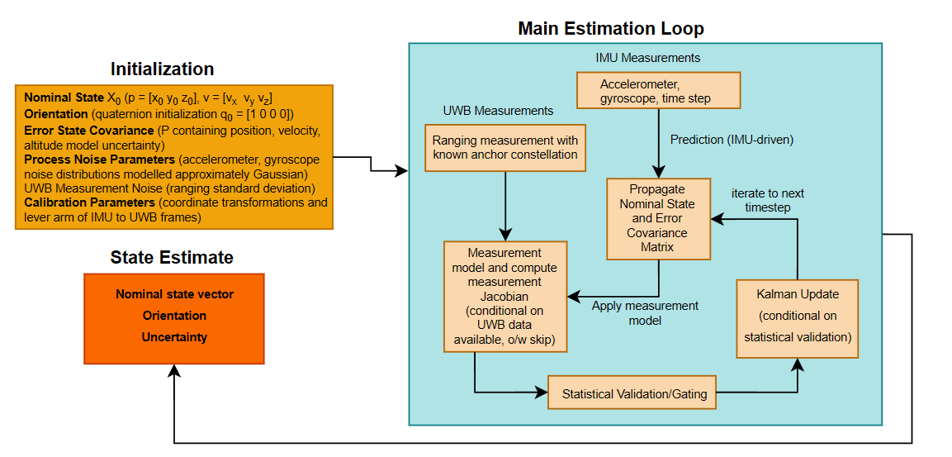

Overview
Designed a real-time indoor localization system that fuses high-rate inertial measurements with Ultra-Wideband (UWB) ranging using an Error-State Kalman Filter (ESKF). The system targets robust positioning in GNSS-denied environments such as indoor robotics and warehouses.
The project spans embedded firmware, estimation theory, PCB design, and offline data analysis.
Constraints
- IMU prediction at higher rate than UWB updates
- Asynchronous UWB range arrivals per anchor
- Robustness to packet drops and noisy measurements
Approach
- Nominal state propagation using IMU integration
- Error-state formulation for stable linear updates
- Sequential UWB measurement updates as ranges arrive
System
- MCU-based embedded platform
- MEMS IMU + DWM3000 UWB module
- Real-time logging and offline evaluation
Evidence
Firmware Architecture: High-level block diagram of the embedded sensor fusion firmware.

Estimation: Error-State Kalman Filter structure used for IMU prediction and UWB correction.
Hardware: Custom PCB integrating MCU, MEMS IMU, and UWB module.
Sensor Data Processing: Example of raw and processed sensor data used in the fusion pipeline.

Implementation Details
- Timing: IMU prediction runs at a fixed rate; UWB updates trigger filter corrections upon reception.
- State Representation: Position and velocity tracked in the nominal state; attitude represented as a quaternion with small-angle error states.
- Robustness: Measurement residuals monitored to reject outliers and unstable updates.
- Analysis: Logged data evaluated offline to verify convergence, drift behavior, and sensitivity to measurement noise.